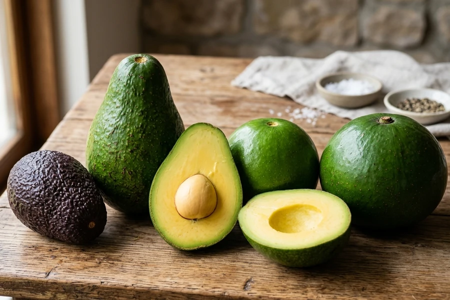
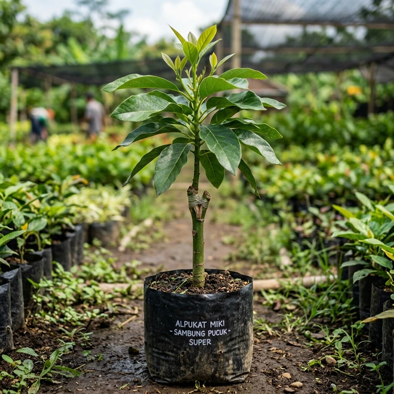
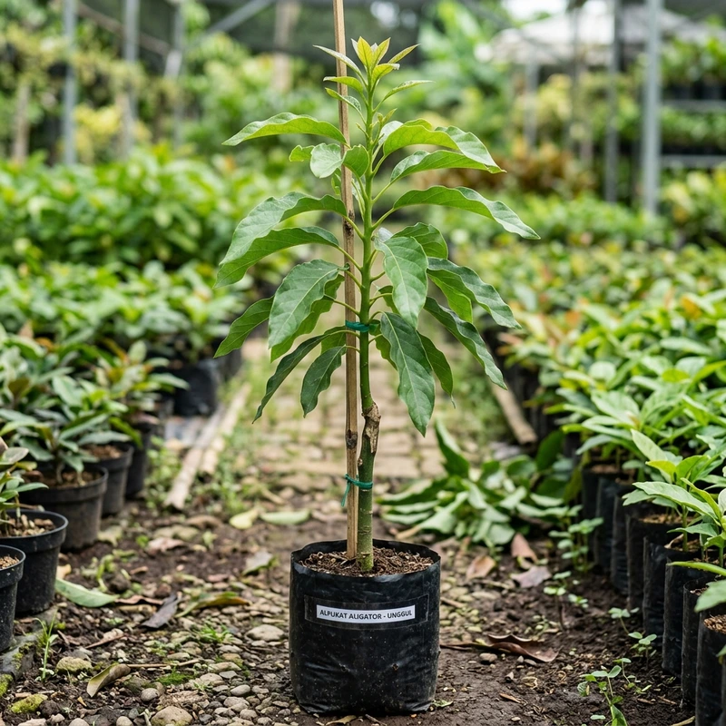
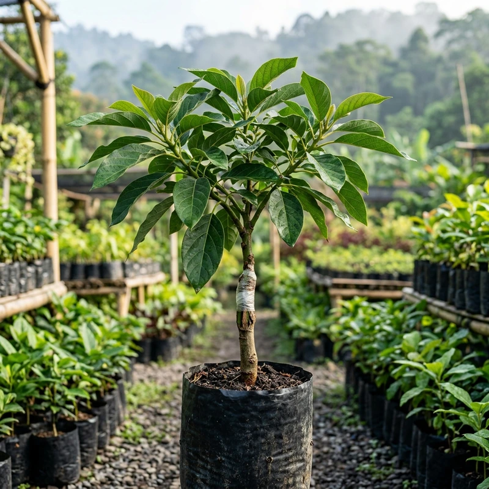

Perbedaan Alpukat Miki, Aligator, dan Hass: Mana yang Cocok untuk Lahan Anda?

Memilih varietas alpukat yang tepat merupakan salah satu langkah paling penting sebelum Anda menginvestasikan modal, lahan, dan tenaga dalam budidaya. Setiap varietas memiliki karakter yang sangat berbeda, mulai dari ukuran buah, tekstur daging, cita rasa, ketinggian tanam optimal (mdpl), hingga potensi pemasarannya. Tiga varietas yang paling banyak diminati saat ini adalah Alpukat Miki, Alpukat Aligator, dan Alpukat Hass.
Alpukat Miki dikenal dengan daging buah yang pulen legit dan potensi berbuah pada umur relatif muda di dataran rendah. Alpukat Aligator menarik perhatian luas karena bentuk buahnya yang panjang dan bobot raksasa hingga lebih dari 1 kg. Sementara itu, Alpukat Hass telah diakui dunia internasional sebagai varietas premium dengan tekstur daging lembut dan cita rasa gurih bermentega tinggi.
Namun, varietas terbaik tidak selalu sama bagi setiap orang. Pilihan yang tepat harus disesuaikan dengan luas lahan, ketinggian tempat (mdpl), ketersediaan air, kemampuan perawatan, serta target pasar yang ingin Anda tuju. Dalam artikel ini, kita akan mengulas perbedaan ketiga varietas ini secara mendalam agar Anda dapat menentukan bibit yang paling tepat untuk kebun komersial maupun pekarangan rumah Anda.
Daftar Isi Panduan Ini
- 1. Mengenal Alpukat Miki (Karakter & Kelebihan)
- 2. Mengenal Alpukat Aligator (Karakter & Kelebihan)
- 3. Mengenal Alpukat Hass (Karakter & Kelebihan)
- 4. Tabel Perbandingan Spesifikasi Lengkap
- 5. Mana yang Paling Cocok untuk Lahan Anda?
- 6. 5 Tips Memilih Bibit Alpukat yang Berkualitas
- 7. Kesalahan yang Wajib Dihindari Saat Memilih Varietas
- 8. Kesimpulan & Rekomendasi
- 9. FAQ (Tanya Jawab Seputar Miki, Aligator, dan Hass)
1. Mengenal Alpukat Miki
Alpukat Miki merupakan salah satu varietas lokal unggulan yang sangat populer di kalangan petani dan penghobi tanaman buah di Indonesia, khususnya di wilayah dataran rendah. Varietas ini menjadi pilihan favorit bagi mereka yang menginginkan buah dengan daging tebal, tekstur pulen, dan rasa gurih yang khas.

Menurut informasi resmi dari Balai Penerapan Modernisasi Pertanian (BPTP) Jambi, alpukat Miki memiliki bobot buah berkisar antara 400–600 gram, daging buah tebal berwarna kuning cerah, serta tekstur yang sangat lembut dan pulen tanpa serat. Tanaman berumur sekitar tiga tahun dari bibit sambung pucuk telah terbukti menghasilkan buah lebat dalam pengamatan panen.
Lihat Stok Bibit MikiKarakteristik Alpukat Miki
Beberapa karakteristik penting yang menjadi pertimbangan utama sebelum memilih alpukat Miki meliputi:
- Ukuran buah: Sedang hingga cukup besar (rata-rata 400–600 gram per butir).
- Tekstur daging: Sangat lembut, padat, dan pulen mentega tanpa serat mengganggu.
- Warna daging: Kuning cerah menarik ketika matang sempurna.
- Cita rasa: Gurih legit dengan sedikit rasa manis alami di ujung lidah.
- Ketahanan Hama: Daun alpukat Miki memiliki enzim alami yang tidak disukai ulat grayak/kipat.
- Potensi penggunaan: Konsumsi keluarga pekarangan, penjualan buah segar meja, dan budidaya komersial dataran rendah.
Kelebihan Alpukat Miki
Salah satu daya tarik terbesar alpukat Miki adalah sifatnya yang genjah (cepat menghasilkan buah pada umur relatif muda, 2,5–3 tahun) jika menggunakan bibit vegetatif sambung pucuk berkualitas tinggi yang dirawat secara optimal. Karakteristik pohonnya yang tidak terlalu tinggi dan bertajuk kompak membuat buahnya sangat mudah dipanen tanpa alat pemanjat tinggi.
Miki sangat ideal bagi pemilik pekarangan rumah di kawasan perkotaan yang bersuhu panas, maupun petani dataran rendah yang ingin mendapatkan perputaran panen yang cepat dan stabil sepanjang tahun.
Catatan Praktisi Agronomi
Meskipun Miki terkenal cepat berbuah, jangan menganggap usia panen sebagai kepastian mutlak tanpa perawatan. Waktu munculnya bunga dan buah sangat dipengaruhi oleh kecukupan sinar matahari minimal 6 jam sehari, pengairan teratur, dan pemupukan fosfat-kalium menjelang musim berbunga.2. Mengenal Alpukat Aligator
Alpukat Aligator memiliki ciri morfologi buah yang sangat mudah dikenali bahkan dari kejauhan: bentuk buahnya memanjang silindris dengan bagian bawah yang membesar, menyerupai moncong buaya. Ukurannya yang relatif spektakuler menjadi daya tarik visual yang kuat bagi konsumen dan pedagang buah segar.

Varietas ini banyak dibudidayakan oleh pekebun yang ingin menawarkan produk dengan keunikan tampilan visual berbeda dibandingkan alpukat pasar tradisional. Satu butir alpukat Aligator bisa mencapai bobot 800 gram hingga 1.300 gram (1.3 kg) per butir!
Lihat Stok Bibit AligatorKarakteristik Alpukat Aligator
- Bentuk buah: Memanjang dengan pangkal meruncing dan bagian bawah membesar menyerupai buah pir raksasa.
- Ukuran buah: Sangat besar (jumbo), dengan bobot rata-rata 800–1.200 gram per buah.
- Tekstur daging: Sangat tebal, padat, dan relatif lembut gurih.
- Cita rasa: Gurih dengan aroma mentega yang nikmat dan rasa manis lembut sesuai tingkat kematangan.
- Potensi penggunaan: Konsumsi bersama keluarga besar, bingkisan parcel buah eksklusif, dan agrowisata petik buah.
Kelebihan Alpukat Aligator
Keunggulan utama Aligator terletak pada penampilannya yang spektakuler. Buah berukuran raksasa memberikan nilai jual tinggi apabila target pasar di wilayah Anda memang menyukai buah jumbo yang mengenyangkan. Satu buah Aligator cukup untuk dinikmati seluruh anggota keluarga sekaligus.
Bagi petani, Aligator adalah produk pembeda yang sangat mencolok di etalase toko buah modern. Namun, perlu diperhatikan bahwa ukuran buah yang besar menuntut asupan air dan nutrisi kalium yang cukup selama pembesaran buah agar buah tidak rontok sebelum mencapai ukuran maksimalnya.
3. Mengenal Alpukat Hass
Alpukat Hass adalah varietas berdarah ras Guatemala yang paling populer dan paling banyak diperdagangkan di pasar internasional. Ciri khas paling ikonik dari varietas ini adalah kulit buahnya yang bertekstur kasar berkerikil dan akan mengalami perubahan warna secara alami: dari hijau pekat saat masih muda, berubah menjadi ungu gelap hingga hampir hitam legam ketika buah telah matang sempurna dan siap dikonsumsi.

Hass mendominasi lebih dari 80% pasar supermarket modern di Amerika Serikat, Eropa, dan Australia. Karakteristik dagingnya yang sangat padat, kadar minyak nabati tinggi (>18%), dan cita rasa gurih khas beraroma kacang (*nutty*) membuatnya menjadi bahan utama menu salad, roti panggang (*avocado toast*), dan kuliner restoran bintang lima.
Lihat Stok Bibit HassKarakteristik Alpukat Hass
- Bentuk buah: Bulat hingga oval simetris dengan ukuran porsi individual yang pas.
- Kulit buah: Tebal, liat, berkerut kasar, dan otomatis berubah hitam keunguan saat matang.
- Tekstur daging: Sangat padat, super *creamy*, dan tidak mudah berair.
- Cita rasa: Sangat gurih dengan sensasi aroma *nutty* khas alpukat subtropis berkelas dunia.
- Daya Tahan Simpan: Kulitnya yang tebal melindungi daging buah dari benturan selama logistik jarak jauh.
Kelebihan Alpukat Hass
Daya tarik terbesar Hass adalah pengakuannya di pasar global sebagai tolok ukur mutu alpukat premium. Bagi pekebun di Indonesia, Hass menawarkan potensi harga jual per kilogram tertinggi dibanding varietas lainnya di gerai supermarket kelas atas.
Namun, penting dipahami bahwa Hass membutuhkan kondisi agroklimat yang spesifik: tanaman ini memerlukan ketinggian di atas 600 hingga 1.500 mdpl dengan suhu malam yang sejuk (16–22°C) agar bunga tipe-A miliknya dapat mengalami inisiasi pembungaan dan pembentukan pentil buah secara optimal.
4. Tabel Perbandingan Spesifikasi Lengkap Miki, Aligator, dan Hass
Untuk memudahkan Anda membandingkan kelebihan teknis dari masing-masing varietas, berikut rangkuman tabel perbandingan komparatif:
| Parameter Evaluasi | Alpukat Miki | Alpukat Aligator | Alpukat Hass |
|---|---|---|---|
| Preferensi Ketinggian | 0 – 600 mdpl (Dataran Rendah) |
200 – 900 mdpl (Dataran Rendah - Menengah) |
600 – 1.500 mdpl (Dataran Tinggi sejuk) |
| Ciri Khas Fisik Buah | Bulat oval mulus, kulit hijau mengkilap | Bentuk panjang 60-80 cm, bawah membesar | Kulit kasar berkerikil, berubah hitam ungu saat matang |
| Bobot Per Butir | 400 – 600 gram | 800 – 1.300 gram (Jumbo) | 200 – 350 gram (Standar Salad) |
| Tekstur Daging | Lembut, padat, dan sangat pulen | Tebal, kenyal, dan relatif lembut | Lembut, sangat padat, dan *creamy* mentega |
| Karakter Rasa | Gurih manis legit, tidak berserat | Gurih bermentega, mengenyangkan | Kaya minyak nabati (>18%), gurih *nutty* |
| Daya Tarik Utama | Pohon genjah, daun kebal ulat | Penampilan jumbo spektakuler | Standar premium pasar dunia & ekspor |
| Calon Target Pasar | Konsumen buah segar lokal & pekarangan | Pecinta buah besar & agrowisata | Supermarket modern & kuliner hotel |
| Faktor Kritis Perawatan | Drainase tanah tidak boleh becek | Penopang cabang buah, suplai air stabil | Kesejukan udara malam hari perbukitan |
5. Mana yang Paling Cocok untuk Lahan Anda?
Jawaban atas pertanyaan ini sangat bergantung pada tujuan penanaman, ketinggian lahan (mdpl), dan luas area yang Anda miliki:
Jika Memiliki Pekarangan Rumah
Alpukat Miki adalah rekomendasi nomor satu. Postur pohonnya semi-kompak, rajin berbuah, dan tidak disukai ulat daun sehingga sangat aman bagi lingkungan bermain anak-anak di rumah. Jika lahan terbatas, Miki juga sangat adaptif ditanam dalam pot drum/planter bag 100 liter (*tabulampot*).
Jika Ingin Menjual Buah Jumbo
Alpukat Aligator sangat patut dipertimbangkan. Ukuran dan bentuknya yang unik memiliki daya tarik komersial tinggi di pasar lokal. Sangat cocok bagi Anda yang ingin membuka agrowisata petik buah atau menyuplai pedagang buah kiloan besar di dataran rendah hingga menengah (200–800 mdpl).
Jika Menargetkan Pasar Supermarket Premium
Alpukat Hass adalah pilihan tepat dengan syarat utama: kebun Anda berada di dataran tinggi pegunungan (>600–1.200 mdpl). Hass memiliki harga jual per kilogram yang stabil tinggi dan serapan pasar modern yang sangat terbuka luas.
Jika Membangun Perkebunan Jangka Panjang
Gunakan strategi kombinasi varietas. Di areal 1 hektar (±250–270 pohon), kombinasikan varietas utama (misal 70% Miki/Aligator) dengan 30% varietas lain yang berbunga bersamaan untuk merangsang penyerbukan silang alami lebah dan mempertinggi persentase keberhasilan buah.
6. 5 Tips Memilih Bibit Alpukat yang Berkualitas
Varietas unggul tidak akan memberikan hasil memuaskan apabila bibit awal yang ditanam berkualitas buruk atau bibit asal-asalan. Pastikan Anda memeriksa 5 poin berikut sebelum membeli:
Periksa Kesehatan Daun dan Batang
Pilih bibit dengan daun hijau mengkilap yang tegak segar, tanpa bercak antraknosa atau luka bekas hama penggerek. Batang bawah harus kokoh dengan perakaran yang tidak tergenang media becek.
Pastikan Keaslian Identitas Varietas
Beli bibit hanya dari penangkar bibit terpercaya yang memiliki kebun indukan terdaftar. Mintalah konfirmasi metode perbanyakan vegetatif (sambung pucuk atau okulasi) dari entres pohon induk yang sudah pernah berbuah lebat.
Hindari Bibit Asal Biji (Semai Biji Murni)
Bibit murni dari biji membutuhkan waktu 7–10 tahun untuk berbuah, dan sifat buahnya sering mengalami penyimpangan genetika (buah kecil atau hambar). Bibit vegetatif menjamin karakter pohon 100% sama dengan pohon induknya.
Periksa Titik Sambungan (Grafting Union)
Pastikan kalus sambungan pada batang sudah tertutup rapat dan menyatu kokoh tanpa celah terbuka yang rawan disusupi air hujan atau cendawan pembusuk.
Tanyakan Standar Packing dan Garansi Pengiriman
Bibit merupakan tanaman hidup yang rawan stres selama ekspedisi. Pastikan penjual menggunakan rangka peti kayu kokoh dan memberikan garansi penggantian jika bibit patah atau mati saat tiba.
7. Kesalahan Fatal yang Sering Dilakukan Pemula
1. Memilih Hanya Berdasarkan Ukuran Buah
Buah berukuran besar seperti Aligator memang menggiurkan, tetapi keberhasilan usaha kebun ditentukan oleh total tonase panen per pohon, kemudahan perawatan, dan harga jual per kilogram, bukan satu buah terbesar saja.
2. Menganggap Umur Berbuah Sebagai Janji Pasti
Klaim "pasti berbuah umur 2 tahun" adalah perkiraan teknis jika tanaman dirawat secara ideal. Pemupukan yang terlambat atau kekeringan ekstrem akan memperlambat inisiasi pembungaan.
3. Mengabaikan Elevasi Mdpl Lahan
Memaksakan menanam Hass di dataran pantai yang bersuhu panas 35°C adalah kekeliruan fatal yang paling sering dijumpai. Pohon akan tumbuh subur daunnya, namun bunganya akan rontok total.
4. Membeli Bibit Murah Tanpa Legalitas dan Asal-Usul
Menyesal setelah 3 tahun merawat pohon karena buah yang keluar berbeda varietas adalah kerugian finansial yang jauh lebih besar daripada selisih harga bibit berkualitas di awal.
5. Menanam Tanpa Menyiapkan Lubang Tanam & Drainase
Akar alpukat sangat rentan terhadap busuk akar (*Phytophthora*) akibat air tergenang. Buatlah lubang tanam gembur dengan sistem guludan atau parit drainase yang lancar.
8. Kesimpulan
Alpukat Miki, Aligator, dan Hass masing-masing memiliki keunggulan kompetitif yang berbeda. Miki adalah juara dataran rendah yang sangat pulen dan tahan hama daun. Aligator menawarkan keunggulan visual buah raksasa yang memikat pembeli. Sementara itu, Hass memegang mahkota varietas premium berstandar ekspor untuk dataran tinggi pegunungan.
Tidak ada satu varietas yang unggul mutlak di segala kondisi lahan. Pilihan bibit terbaik adalah varietas yang paling selaras dengan ketinggian mdpl lokasi Anda, tujuan berkebun, dan target pasar lokal yang ingin Anda jangkau.
Konsultasikan Lahan Anda dengan Tim Astana Avocado
Masih ragu menentukan varietas bibit yang cocok untuk daerah Anda? Diskusikan ketinggian lahan, jenis tanah, dan ketersediaan stok bibit sambung pucuk bersertifikat kami langsung dengan tim agronomis kami.
9. FAQ: Pertanyaan Umum tentang Alpukat Miki, Aligator, dan Hass
Ditulis oleh Tim Agronomis & Hortikultura Astana Alpukat
Pusat pembibitan hortikultura spesialis tanaman alpukat okulasi & sambung pucuk bersertifikat, berbasis di Desa Trayang, Kec. Ngronggot, Kab. Nganjuk, Jawa Timur. Berpengalaman mendampingi ratusan hektar perkebunan alpukat komersial dan pekarangan di seluruh wilayah Indonesia.